Data Structures and Algorithms
with Object-Oriented Design Patterns in Java
Data Structures and Algorithms
with Object-Oriented Design Patterns in JavaThe previous section has shown that the worst-case running time to insert or to find an object into a chained scatter table is O(M). The average case analysis of chained scatter tables is complicated by the fact that lists coalesce. However, if we assume that chains never coalesce, then the chains which appear in a chained scatter table for a given set of items are identical to those which appear in a separately chained hash table for the same set of items.
Unfortunately we cannot assume that lists do not coalesce--they do!
We therefore expect that the average list will be longer than  and that the running times are correspondingly slower.
Knuth has shown that the average number of probes
in an unsuccessful search is
and that the running times are correspondingly slower.
Knuth has shown that the average number of probes
in an unsuccessful search is
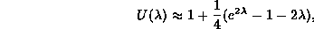
and the average number of probes in a successful search is approximately
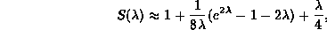
where  is the load factor[27].
The precise functional form of 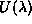 and 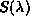
is not so important here.
What is important is that when 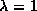,
i.e., when the table is full,
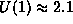 and 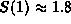.
Regardless of the size of the table,
an unsuccessful search requires just over two probes on average,
and a successful search requires just under two probes on average!
is the load factor[27].
The precise functional form of 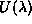 and 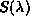
is not so important here.
What is important is that when 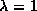,
i.e., when the table is full,
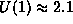 and 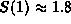.
Regardless of the size of the table,
an unsuccessful search requires just over two probes on average,
and a successful search requires just under two probes on average!
Consequently, the average running time for insertion is
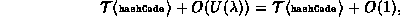
since the insertion is always done in first empty position found. Similarly, the running time for an unsuccessful search is
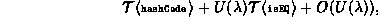
and for a successful search its
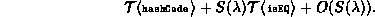
 Copyright © 1998 by Bruno R. Preiss, P.Eng. All rights reserved.
Copyright © 1998 by Bruno R. Preiss, P.Eng. All rights reserved.